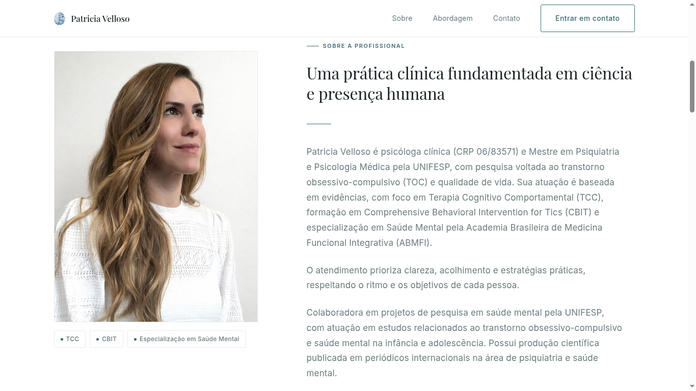
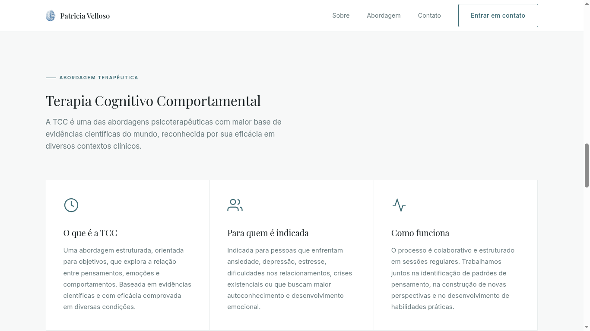
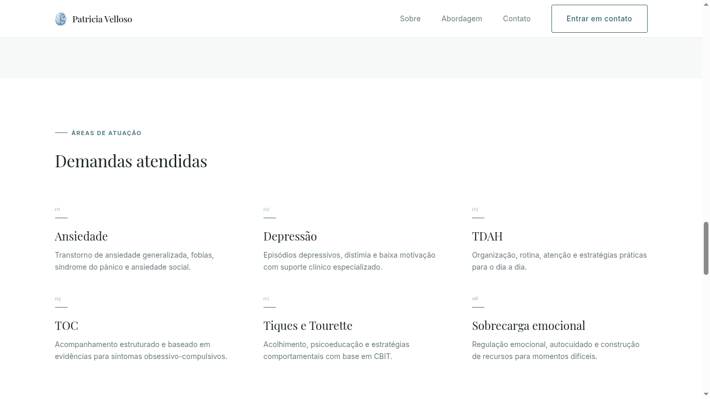

Context
Patricia Velloso is a clinical psychologist specialized in TCC and CBIT — a co-founder of TicCare and a researcher at UNIFESP with published work in international psychiatry journals. Before this project, her only digital presence was through social media. She needed a clinical site that could carry both the weight of her credentials and the warmth her patients need to take the first step.
Problem
Patricia has strong scientific credentials — Master's degree from UNIFESP, CBIT certification, published research, specialization in mental health. But the people who seek her out are often anxious, overwhelmed, or in distress. A site that reads like a CV creates distance exactly when the visitor needs to feel safe enough to reach out.
Solution
Design a site that leads with warmth and places credentials in service of trust — not as a display of expertise, but as evidence that this person can actually help. Every structural decision was made with one question in mind: does this make it easier or harder for someone in a difficult moment to take the first step?
Design Challenge — Credibility Without Distance
The central tension in this project: the professional's credibility needed to be visible — but the patient's emotional state had to come first.
The visitor's emotional state
Most visitors to a clinical psychology site are not browsing casually. They arrive with a specific difficulty — anxiety, burnout, a child with tics — and they need to feel understood before they trust. Clinical language and dense credential lists can read as cold and reinforcing the very distance they're trying to bridge.
The professional's need for credibility
Patricia's qualifications are genuinely rare — CBIT certification for tics and Tourette is not common in Brazil, and her research background at UNIFESP matters to parents and patients seeking evidence-based care. Hiding credentials would undermine trust for a different reason: it would make her indistinguishable from any other psychologist.
Design Decisions
Warmth first, credentials second
Clinical sites often open with the professional's name and titles. This positions the visitor as an observer of credentials — not someone being welcomed. The hero leads with the patient's experience: "A space of listening, care and building paths for those facing anxiety, OCD, ADHD, tics or emotional overload." The CRP number and titles come after — they support the opening, not replace it.
CTA before depth
A visitor who decides to reach out shouldn't have to scroll to find the contact. WhatsApp and email are accessible from the hero — with a clear note: "Response within business hours." Setting this expectation upfront reduces the anxiety of reaching out into the unknown.
Structured areas of focus
Listing conditions generically ("I treat anxiety and depression") is too broad to feel relevant. The site presents six numbered areas — Anxiety, Depression, ADHD, OCD, Tics and Tourette, Emotional Overload — each with a brief description. The goal: the visitor reads the list and quickly finds themselves. Recognition replaces searching.
The therapy journey made visible
One common barrier to first contact is not knowing what happens after. A three-step section (Scheduling → First session → Follow-up) maps the journey before the visitor commits to it. Reducing the unknown reduces the friction to take the first step.
Product Decision — Reflection Exercise
The most significant decision in this project was one that went beyond the site's original scope.
The site's primary purpose is to help a visitor decide whether to reach out. But some visitors arrive not yet ready to commit — they're exploring, processing, or unsure if therapy is what they need. For these visitors, a purely institutional site offers nothing: read the credentials, see the contact, leave.
A reflection exercise was added as a separate, accessible page — a structured set of questions to help the visitor notice what they're carrying before making any decision about therapy. It offers immediate, practical value with no commitment required.
This is not a conversion trick. It extends the site's purpose: from "decide if you want to book" to "understand what you're feeling." The exercise serves the visitor first — and that is what makes a mental health professional worth trusting.
Trade-offs
Warmth vs. professional distance
In clinical psychology, too much informality can reduce the perceived seriousness of the work. The balance was held through tone and structure: warm language in the opening and CTAs, precise and clinical language in the credentials and therapy description sections.
Simplicity vs. completeness
Patricia has significant academic and clinical depth — publications, specializations, research collaborations. Including all of it would overwhelm the visitor who just needs to know: "is she qualified to help me?" The site shows what is necessary to establish trust and stops there. Depth is available for those who seek it.
Interface
Hero & Positioning
Opens with the patient's experience, not the credentials. Direct contact CTAs visible immediately.

About the Professional
Credentials and research background structured to build trust — UNIFESP, CBIT, international publications — without reading as a CV wall.

Therapeutic Approach
TCC explained in three accessible pillars — what it is, who it's for, how it works — in language the patient can understand.

Areas of Focus
Six numbered areas with brief descriptions — structured so the visitor quickly finds their own situation.
